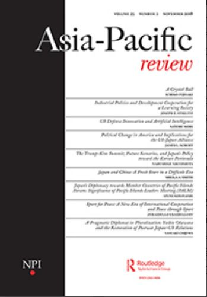

收录于合集

简 介
【 作者介绍 】Ming Wan, 美国乔治梅森大学政府与政治学院教授，主要研究领域包括东亚研究、国际关系理论研究以及中日关系。他的主要著作包括《中日关系：互动、逻辑与转变》（Sino- Japanese Relations: Interactions, Logic, and Transformation），《东亚政治经济：为财富和权力而奋斗》（The Political Economy of East Asia: Striving for Wealth and Power），《中国模式与全球政治经济：对比、影响与互动》（The China Model and Global Political Economy: Comparison, Impact, and Interaction）等。
【 期刊来源 】Asia-Pacific Review, Vol.21, No.1, 2014, pp.30-40.
《亚太评论》于1994年成立，刊登的论文题材聚焦亚太地区，涵盖政治、经济、安全、能源和环境领域的诸多问题。

【 整理 】庞林立
【 审核 】崔宇涵
【 框架 】
简介
协同进化理论
中日协同进化历程
中日关系现有紧张态势
展望未来
简 介
**
**
近些年来，中日两国互动由黑箱转向公开化，即时新闻和社会媒体几乎覆盖了中日关系变化的全过程。然而互动本身并非娱乐游戏，一旦现有的双边冲突超出掌控，人们将为此付出惨重代价。在本文中，作者希望找到一种合适的理论性框架帮助人们理解未来两国将如何结束这种紧张态势。
对于大部分中国人和日本人而言，中日两国出现紧张态势的原因是不证自明的，对方国家应当承担导致冲突的全部责任，然而这种观点无法解释为何对方国家能够与其他国家保持良好的外交关系。作者认为，政府的处置失当是双边关系恶化的关键性因素，中日两国政府都应当为双边关系的恶化负责，但指责哪一方应当承担更大责任并不重要。
关于中日双边关系存在多种解释架构，“权力转移理论”认为当一个上升国家出现，并挑战现有霸权国时，国际体系会面临动荡局面，中日关系适用这种解释。这种观点对于解释国际政治长期以来的重大变迁很有价值，然而对于解释特定案例而言太过宽泛。在本文中，作者将研究的主题由为何中日两国存在紧张态势转变为为何两个曾经拥有良好关系的亚洲强国在经济往来以及人员流动愈发密切的情况下却出现高度紧张态势。有学者曾经利用定量分析方法指出经济相互依存不必然防止军事冲突的产生，然而作者认为，定量分析意在解释概率，在解释特定案例时不具有针对性。本文中使用的协同进化理论将生物学和进化论中的观点引入国际关系领域，作者指出，中日在上千年时间中伴随着矛盾而共同发展，双方之所以避开了1970-1990年的冲突，原因在于两者处于不同的生态圈内。然而伴随着全球化的发展以及两国的高度接近，生态圈之间的隔离被打破，引发了关系的倒退。
协同进化理论
约翰·汤普森（John N. Thompson）将协同进化定义为“自然选择驱动的相互作用的物种之间的相互进化变化”，这一定义不仅涵盖了物种自身的变化，也包括了双方关系的演进。在其1982年的著作中，汤普森更加聚焦物种间的交互模式，而非单纯的物种分类学，这对于我们理解国际关系中的各种互动模式具有重要意义。他提出了“地理镶嵌路径”（geographical mosaic approach），认为人口可能存在于异质环境中的不同栖息地。这一理论帮助解释了中日之间的紧张态势，它指出，中日双方从不同的栖息地逐渐进入同一区域，而这刺激了矛盾的产生。
** 中日协同进化历程**
作者将中日关系大致分成了四个阶段：
第一阶段为19世纪中期以前，持续了近两千年，时间最长。古代中日两国同处于欧亚体系内，但中国受地形影响与西南方以及西方国家隔绝，日本在海洋的阻隔下与整个亚洲大陆分离。这一时期的显著特点是，中日两国尽管互动并不频繁，但社会文化具有高度相似性，双边关系也非常稳定，在绝大多数时间内维持和平局面。
第二阶段为19世纪中期到20世纪中期。中日两国有更加直接的互动并且都出现在国际政治舞台。双边互动模式由之前的儒家世界秩序主导转变为法律条约式的、强调主权与掠夺的威斯特法利亚体系主导，日本比中国更加迅速的融入了这种世界秩序，并且展开了对后者的劫掠。这一时期的显著特点是，尽管战争频发，但两国之间的人员来往愈发紧密，日本成为刺激中国国内政治变迁的重要外在因素。
第三阶段为20世纪后半期，1972年双边关系恢复正常化后，“1972体系”成为双边关系的基石。尽管历史问题和领土争端已经在这一阶段显露端倪，但双方领导人都尽可能避免触及这些问题。从协同进化的理论看，双方在这一时期处在不同的小生态圈内，经济上，日本在高端部门与其他发达国家展开竞争，而中国刚刚依靠劳动密集型产业进入工业化时代；政治上，日本正在谋求一个更加谨慎的参与全球外交的方式，而中国则在全球范围内有更加广泛的政治利益，中日双方的互动在这一时期尽可能的保持了多方共赢的目标。然而冲突也是在这一时期逐渐显露，在长达十年的蜜月期结束后，双边关系进入了前进- 后退循环期，尽管双方都希望做出必要承诺，但这并无助于抑制现有局势的恶化。
** 中日关系中的现有紧张态势**
进入新千年后，中日关系进入了第四阶段。这一时期的特征是，双方不愿意再做出任何承诺，历史与领土问题愈发激化，而政府的处置不当导致小的事件不断演化为一场场危机。作者认为，危机出现的原因在于中日双方逐渐接近，而相似性则有可能催生轻视。
从生态学角度来看，中日双方在第四阶段进入了直接竞争时期，双方在同一块草坪争抢食物：日本坚称正在遭受中国崛起的威胁，并谋求更高地位，从而必然导致与中国在政治影响力和领导力方面的竞争。而随着经历过战争的一代人逐渐谢幕，选择性的遗忘历史以及缺乏批判性思考将进一步导致政府难以有效处理双边关系。尽管双方致力于保持经济和文化上的往来，但这些努力无济于事。
** 展望未来**
作者认为如果要对双边关系的未来进行预期，需要我们判断未来是否会出现关键性的变革。但当前我们能够看到的是，中日两国的领导团队都将在很长一段时间内保持不变，因此这种高度紧张的局势很有可能还会在一段时间内继续。此外，中日双边关系中出现的一个新问题是，双边冲突逐渐呈现明显的多边化趋势，第三方国家的介入将导致矛盾更加复杂。在此基础上，作者对中日关系的未来持消极态度，他认为，两国唯有改变既定思维模式并适当调整预期，才有可能防范未来冲突的进一步加剧。
点击左下角“ 阅读原文 ”获取原文pdf版
**
**
声明
此文为国政学人微信公众平台外文编译系列文章之一，由国政学人编辑首发，不代表本平台观点。欢迎转发分享，未经授权谢绝转载。如有问题，请联系guozhengxueren@163.com
更多阅读
国政学人 （ID：guozhengxueren)
为方便学人及时阅读高质量文章
别忘把国政学人设置 星标 哦~